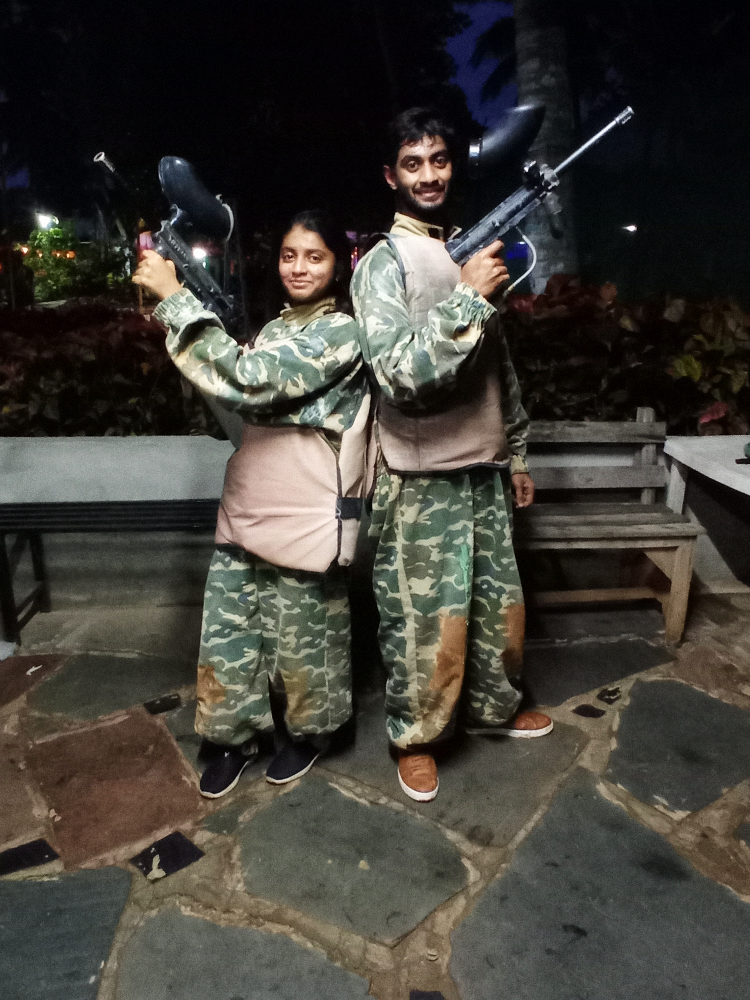
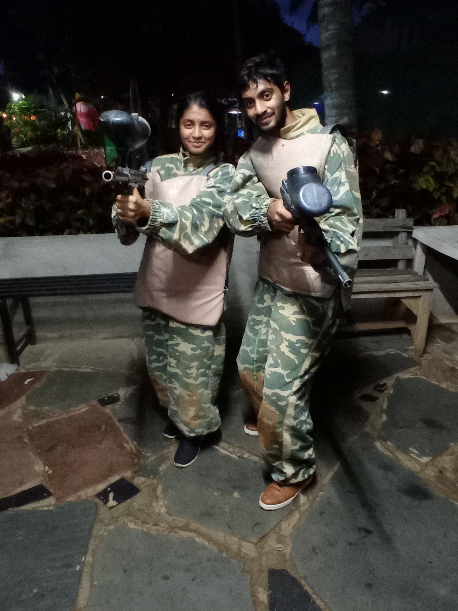
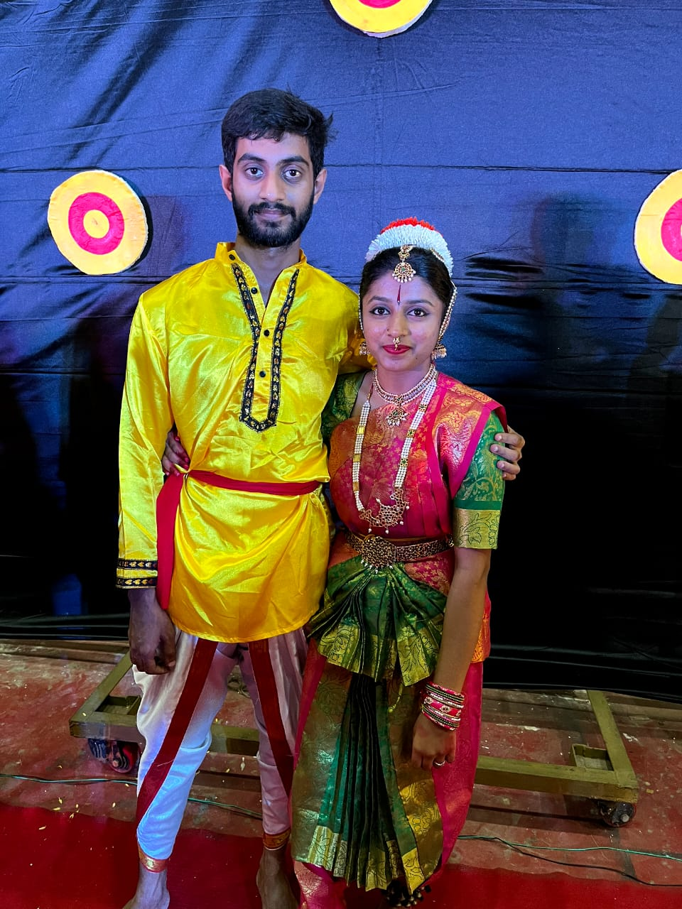
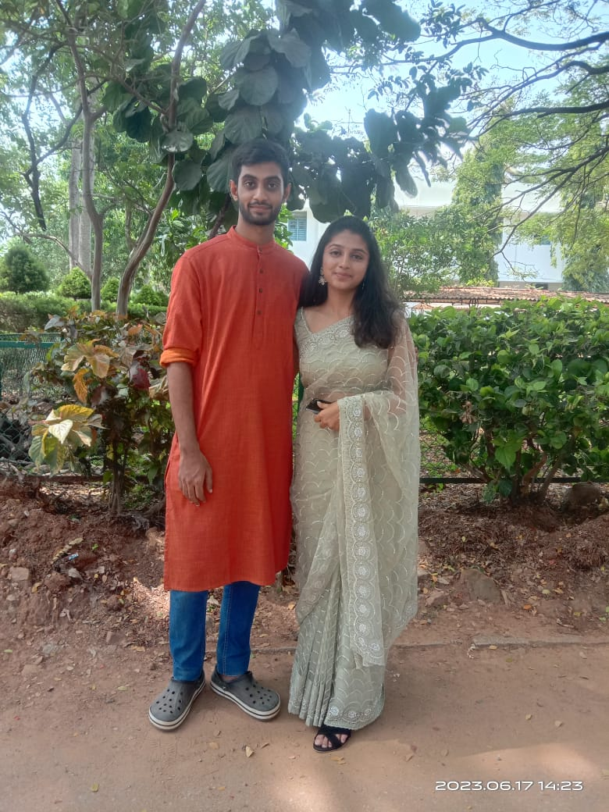

I want to talk with you.. It's just I fear to text or give a call.
Nothing much wanted to share some things!
Little flash back: 7th April 2022, 4:35pm the day I met you! Obvio namma teju sir's cabin kelbeka.
Mini-Project discusion ge anta sir kardidru navu discussion erli topic ne ready itirlilla. 🤦🏻♂️
Sir adikke, "Nodro hudgir nodi kaliri" anta heli,.. gotta yuru anta keldaga... avaga the first time I saw you! Avaglu huduktidde.. height diff italla. Just kidding! 🤭
Nanige Poorvika yaaru anta ne gotirlilla, it was the first ever meet.. it was just normal convo but interactions with you literally made me feel something special in you! ☺️
I don't get distracted. I am a bit goal oriented. But I always feel very happy whenever I speak with you. I feel relief from any sought of stress.
I never told any of these to you.. yeah I feared you would stop talking with me, but I enjoyed every single moment with you! 💯
Some of the expected and unexpected meets at the food-street.. college.. all were soo magical! 🤗
How can I forget to mention our first trip to Mysuru! Still today I open those folders re-go on a virtual tour!


This one tho sometimes I see in loop! One of the good captures I have done!
These are special tooo!


They are just some but they don't end here! Tata-Elxsi comes into picture!
I was the happiest to hear both of us placed in same Org! Haan units diff adaga salpa bejar aythu but ebrugu TVM assign anta bandaga again happy! BLR bandidru ashte khushi eradu just saying both same place happy happy feels! 💯
Its not the place, its the person who is Important!
Actually I was not happy when I was asked to work from Kinfra but part of work couldn't say no. I'll remember that caption! you said when I asked you to come to Kinfra!! 🫡
One of the best day here in TVM for me tho is the day you joined me for Kovalam! That one trip to Kovalam is never forgetable to me.. I feel soo happy even today about it that you came with me! I do not have any picture but unforgetable memory! 💯
Can't say no to even this! it was 12:02pm -- 05/09/2024 you called and wished me!! Yaar idk you remembered, idk did someone tell you idk.. but that 1 min talk was the best part of that day! It really made my day apart from all celebrations.. I have no words to express this! 🤗💯
Nijja helbek andre, I felt a bit lucky for being in Neyyar on that Onam day! Sid-Nandan-Nanu sumne matadkondivi.. lets keep a count yar yar chenagi kantare anta - not naming just count sumne 🤭. For me tho I wanted to enjoy only one person's company and conversed the same too.. You were looking very pretty that day! 🤗💯
When ever I have come to Neyyar it's not like I didnt have work! Nan night mugsi I used to come.. for only reason that even 5mins like its ok I didn't want to miss any chance if I could spend some time with you. 💯
Yaar you may feel how silly or not so matured I am.. but I just enjoy every single moment with you! That's True.
Poorvika somedays I have irritated you a lot - will not disagree, its just I conveyed things in a very wrong way. Nothing of that should have happened.. I really really apologise for what has happened. Never intended to happen anything like that. Never wanted to cross any limit. 💯
Poorvi tapp tilkobeda.. sometimes I write small poems. Had written few lines for you again feared to tell you... but 100% original hehe!
Its not just some affection or crush I had anta alla. Aatara agidre b'lore hudga, I would have had a big list. Mansindda eshta patidde... Liked you from my heart! 💯
I know I had confessed to you earlier and I was asked not to keep anything... it's just I really really wanted to win your heart!
Mansindda eshta patidde bidakagutha! Eden Aatasaman huh? Preeti na preeti-indane gelbeku anta ittu mansalli!
Not a day dreamer but I really dream't the things had gone other way, it would be the best thing in my life! It really hurts yaar when you ask me not to treat special. When you are soo important to me how can i not treat you as someone special!!!
I realized my efforts bring discomfort to you, it makes me more far from you! Nan khushi ge I don't want to hurt you, never intended to nijja! 💯
You had told me many times that you don't care... but I was in a dilusion that no you do care.. my bad!
I believe in never giving up what's really important to me, today I disprove my belief. I... I give up yaar today! 😢
Easy ella, this will really really hurt me! 💯 No worries I am mature enough to not create any scenes! 💯
But nan life alli nee yavaglu nanna Radhe agirtya! ❤️🩹
Poorvi last request.. pleaseee don't keep any bad impression about me. What you think about me really matters to me! 💯
I wanted to share this in person with you... I fear of messing things, and also there is much moreee things I want to share with you.. will never irritate you by asking you out again.
Yarella andru you can just ask Nithin if you wish how important you were to me! He might give a big dairy of my efforts! 💯
Thanks yaar for accepting me as friend.
Thanks yaar for reacting to my memes the only person whom I used to share with!
Thanks yaar for joining me for what all I asked you for [NO COMPLAINTS!]💯.
Thanks yaar for letting me call you Poorvi, Madam and what not.. am really really sorry! if you didn't like it.
Thanks yaar for tolerating me mainly!
Thanks for Everything!! 💯
Naninda Thapp agide Kshamasbidu Poorvika! 🙇🏻♂️
I LOVED YOU Poorvika! 💕 I really did!
Its not like am getting distracted.. its just I want to achieve heights with you by my side, I want to clear my goals/checklists with you by my side, all I wish is holding your hand and never leaving it! 💯
I did not mean saying you to let your dreams/wishes go… its just I want you with me and yeah no doubts I would always be there standing with you in your milestones!! 💯
From the info.. I shared with you of being selected to Elxsi… to I will be billable anta alla first share madidde nin jothe! 💯
The only thing till today I personally asked from God is the courage to win your heart!❤️
I am not saying somethings and keeping somethings its just sometimes things are soo sensitive that it’s good to approach them carefully.
And about that day its not about naming any person.. the context related only to this.. I keep things only between you and me.. it is only you and only you that matter to me!
You tell me that I dont understand. I read you like no friend of your does! 💯 Your every NO have always excepted it happily! Forget about company, you dont like to speak with me yaar.. it's always me who approach you! Office alli canteen ge kariyad agli / chats agli / Trips agli - for only you I had cancelled Ponmudi for 2 weeks Poorvika nu barli anta! Nee ond sali adru.. have you just thought about it, why would you! I am just no one to you. 💯
Yavag yaare adkondru.. I used to see they shut their mouth. Things shouldn't reach till you.. you shouldn't be hurt by those words. Nee nag-nagta khushi agi erbeku anta ittu, Amma ondh maath helkotidru... "Maathe Muthuu Maathe Mrutyu!".. I dont need to elaborate that!
Today I lost the person whom I adored the most!
Today I lost that person by just saying what I truely feel for her!
Today I lost that person whom I used to proudly say yess she is my friend!!!
I was the happiest person to come to TVM and ig will be the saddest one too leave! I wish I had not come to TVM! 💯
Jothe bidak eshta ella but.. I will just ghost away! Hope you never ever meet a boring person like me!! Stay HAPPY Poorvi! KHUSHI agi eru!! Ig its really a TATA in TATA! You will always remain the same to me! I Thank and Appreciate for the effort you have put to read till hear! You can happily block me will not ask you anything! 🫂🤗❤️
.jpeg)